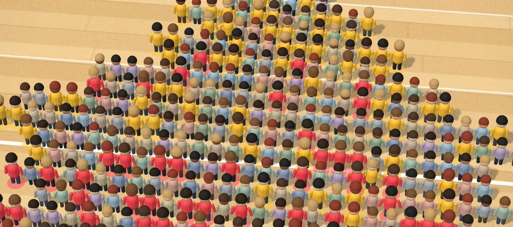
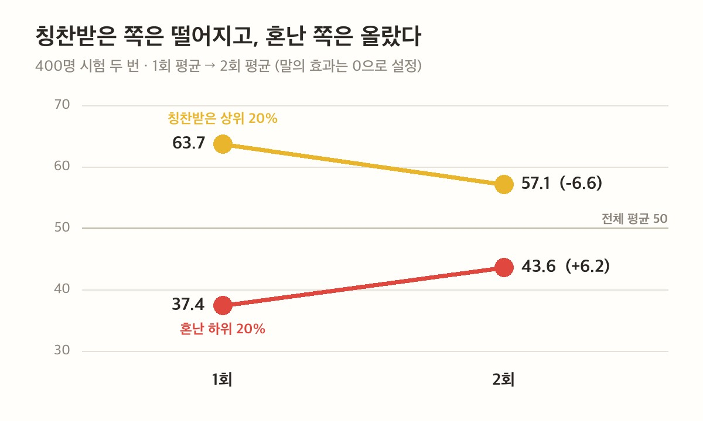
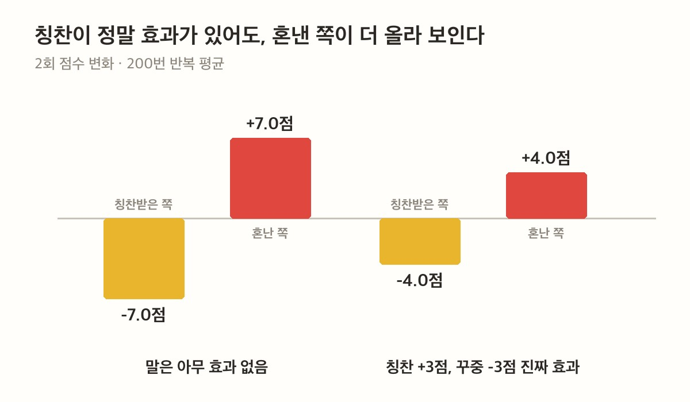
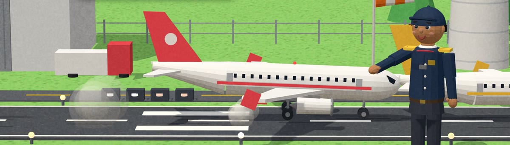

칭찬하면 못하고 혼내면 잘하는 진짜 이유(평균으로의 회귀)
말보다 먼저 움직이는 것
아이가 받아쓰기 백 점을 받아 오면, 그 종이는 냉장고 문으로 간다. 자석 두 개로 반듯하게 붙인다. 오늘은 치킨이다. 잘했다는 말이 몇 번이고 나온다.
그리고 다음 주. 가방에서 꺼낸 종이에는 칠십 점이 적혀 있다.
이상하게 서운하다. 칭찬을 그렇게 해 줬는데. 그 서운함 끝에 어른들이 하던 말이 떠오른다. 칭찬하면 풀어진다니까.
반대의 경험도 있다. 크게 실망한 날, 한숨 섞인 잔소리를 했더니 다음 시험은 올라 왔다. 그 순간 속으로 씁쓸하게 고개를 끄덕인다. 역시 좀 엄하게 해야 하나.
회사도 다르지 않다. 최고의 분기를 보낸 팀을 공개적으로 칭찬하면, 다음 분기엔 꼭 주춤한다. 말이 이렇게 거꾸로 듣는다면, 우리는 앞으로 무슨 말을 해야 할까.
· · ·
400명의 두 번째 시험
이 씁쓸한 법칙이 정말인지, 사람 400명에게 시험을 두 번 보게 했다. 물론 컴퓨터 속에서다.
규칙은 단순하다. 점수는 실력과 운이 반반 섞여 정해진다. 실력은 그대로지만, 운은 시험 볼 때마다 새로 뽑힌다. 1회가 끝나면 상위 20%는 칭찬하고, 하위 20%는 혼낸다.

결과는 그 법칙 그대로였다. 칭찬받은 쪽은 평균 63.7점에서 57.1점으로 떨어졌다. 혼난 쪽은 37.4점에서 43.6점으로 올랐다.

여기서 잠깐 골라 보자. 이 실험에서 효과가 있었던 건 무엇일까.
- A. 칭찬은 독이었다
- B. 꾸중이 약이었다
- C. 둘 다 아무 효과도 없었다
정답은 C다. 나는 이 실험에 미리 설정 하나를 숨겨 두었다. 칭찬과 꾸중이 점수에 미치는 효과를 정확히 0으로 맞춰 둔 것이다. 아무 말도 하지 않은 것과 똑같았다. 그런데도 칭찬은 독처럼, 꾸중은 약처럼 보였다.
· · ·
운은 두 번 오지 않는다
1회에서 상위 20%에 든 사람들을 생각해 보자. 그들은 대체로 실력이 좋다. 하지만 그날 운까지 좋았던 사람이 유난히 많이 섞여 있다. 아는 문제만 나왔거나, 찍은 답이 맞았거나.
2회에도 실력은 그대로 따라온다. 그러나 운은 따라오지 않는다. 새로 뽑힌 운은 평범하고, 그래서 점수는 가운데 쪽으로 돌아온다. 하위 20%는 정확히 거꾸로다. 운이 나빴던 날의 다음은, 대개 덜 나쁜 날이다.
이것이 평균으로의 회귀다. 1886년 프랜시스 골턴이 키가 아주 큰 부모의 자녀가 부모보다는 평균에 가깝다는 것을 보고 처음 이름을 붙였다.
더 놀라운 장면은 그다음이었다. 이번에는 말에 진짜 힘을 주었다. 칭찬하면 실제로 3점이 오르고, 혼내면 실제로 3점이 내려가게. 칭찬이 분명히 옳은 세상이다.

그래도 칭찬받은 쪽은 평균 4점 떨어졌고, 혼난 쪽은 4점 올랐다. 나는 한동안 이 막대를 보며 말을 잃었다. 칭찬이 옳은 세상에서도, 경험은 꾸중의 편을 든다.
심리학자 대니얼 카너먼은 비행 교관들에게서 똑같은 믿음을 들었다고 한다. 착륙을 잘해서 칭찬하면 다음엔 못하고, 엉망이어서 소리치면 다음엔 나아지더라고. 교관들이 본 것은 말의 힘이 아니라 운의 되돌림이었다.

운의 몫을 바꿔 보면 되돌림의 크기가 달라진다. 직접 확인해 보자.
→ 칭찬과 꾸중 실험, 직접 돌려 보기
운이 차지하는 몫이 클수록 되돌림도 커진다. 점수의 10%만 운인 시험에서는 상위 쪽이 겨우 1.4점 내려왔지만, 80%가 운인 시험에서는 11점 넘게 내려왔다. 운이 많이 섞인 일일수록, 칭찬은 더 억울한 누명을 쓴다.
· · ·
가장 아플 때 먹은 약
이 착각은 칭찬과 꾸중에서 끝나지 않는다.
허리가 가장 아픈 날, 우리는 무언가를 한다. 새 파스를 붙이거나, 지인이 권한 체조를 따라 하거나, 처음 가 보는 한의원 문을 연다. 그리고 며칠 뒤 정말로 나아진다. 가장 아플 때 시작한 일은, 무엇이든 효과가 있어 보인다.
통증에도 좋은 날과 나쁜 날이 있다. 가장 나쁜 날의 다음은, 그것만으로도 대개 조금 나은 날이다. 그 사이에 한 일이 공을 다 가져간다. 그래서 효과를 제대로 알고 싶은 약은, 먹은 사람과 먹지 않은 사람을 나란히 비교한다. 되돌림은 두 쪽에 똑같이 일어나니까.
· · ·
다시 냉장고 앞이다.
칠십 점짜리 종이를 들고 선 아이에게, 이제 나는 다른 눈으로 묻고 싶다. 지난주 백 점은 실력에 운이 조금 얹힌 날이었을 것이다. 오늘의 칠십 점은 운이 조금 비켜 간 날일 것이다. 칭찬이 아이를 풀어지게 한 게 아니었다.
그 종이도 냉장고에 붙인다. 자석 두 개로, 지난주처럼 반듯하게.
여러분도 "칭찬했더니 오히려 떨어지더라"는 경험이 있나요? 그때 정말 칭찬 탓이었을지, 댓글로 같이 생각해 봐요.
덧붙임. 글 속의 숫자는 사이트 시뮬레이션 모델 결과다(400명, 점수 흩어짐의 50%가 운, 상·하위 20%에 칭찬·꾸중, 말의 효과 0, 시드 1. 효과 ±3점 비교와 운의 몫 비교는 200번·50번 반복 평균이며, 이론값은 ±7.0점). 실제 학생이나 조종사의 기록이 아니다. 비행 교관 일화는 D. Kahneman, 『생각에 관한 생각(Thinking, Fast and Slow)』(2011)의 평균으로의 회귀 장에 나오며, 모델은 이 일화를 단순하게 다시 만든 것이다. 골턴의 연구는 F. Galton (1886), "Regression towards Mediocrity in Hereditary Stature". 그림은 직접 만든 3D 시뮬레이션 화면과 그래프이며, 글 정리에 AI(Claude)의 도움을 받았다.
— 시뮬라티오 랩, Lab장
네이버 블로그로 옮기기
① 제목 → 제목 칸 ⌘V · ② 본문 → 본문 ⌘V (사진도 함께 붙어요. 안 붙으면 사진만 따로 올리기) · ③ 태그 → 발행 창 태그 칸 · ④ 카테고리 "왜 그럴까" · ⑤ 발행 뒤 네이버 주소를 content/05-regression.md 의 naver_url에 적기
아이가 받아쓰기 백 점을 받아 오면, 그 종이는 냉장고 문으로 간다. 자석 두 개로 반듯하게 붙인다. 오늘은 치킨이다. 잘했다는 말이 몇 번이고 나온다.
그리고 다음 주. 가방에서 꺼낸 종이에는 칠십 점이 적혀 있다.
이상하게 서운하다. 칭찬을 그렇게 해 줬는데. 그 서운함 끝에 어른들이 하던 말이 떠오른다. 칭찬하면 풀어진다니까.
반대의 경험도 있다. 크게 실망한 날, 한숨 섞인 잔소리를 했더니 다음 시험은 올라 왔다. 그 순간 속으로 씁쓸하게 고개를 끄덕인다. 역시 좀 엄하게 해야 하나.
회사도 다르지 않다. 최고의 분기를 보낸 팀을 공개적으로 칭찬하면, 다음 분기엔 꼭 주춤한다. 말이 이렇게 거꾸로 듣는다면, 우리는 앞으로 무슨 말을 해야 할까.
· · ·
400명의 두 번째 시험
이 씁쓸한 법칙이 정말인지, 사람 400명에게 시험을 두 번 보게 했다. 물론 컴퓨터 속에서다.
규칙은 단순하다. 점수는 실력과 운이 반반 섞여 정해진다. 실력은 그대로지만, 운은 시험 볼 때마다 새로 뽑힌다. 1회가 끝나면 상위 20%는 칭찬하고, 하위 20%는 혼낸다.

400명의 1회 점수. 위쪽 노랑은 칭찬받을 사람, 아래쪽 빨강은 혼날 사람
결과는 그 법칙 그대로였다. 칭찬받은 쪽은 평균 63.7점에서 57.1점으로 떨어졌다. 혼난 쪽은 37.4점에서 43.6점으로 올랐다.

칭찬받은 쪽은 6.6점 떨어지고, 혼난 쪽은 6.2점 올랐다
여기서 잠깐 골라 보자. 이 실험에서 효과가 있었던 건 무엇일까.
- A. 칭찬은 독이었다
- B. 꾸중이 약이었다
- C. 둘 다 아무 효과도 없었다
정답은 C다. 나는 이 실험에 미리 설정 하나를 숨겨 두었다. 칭찬과 꾸중이 점수에 미치는 효과를 정확히 0으로 맞춰 둔 것이다. 아무 말도 하지 않은 것과 똑같았다. 그런데도 칭찬은 독처럼, 꾸중은 약처럼 보였다.
· · ·
운은 두 번 오지 않는다
1회에서 상위 20%에 든 사람들을 생각해 보자. 그들은 대체로 실력이 좋다. 하지만 그날 운까지 좋았던 사람이 유난히 많이 섞여 있다. 아는 문제만 나왔거나, 찍은 답이 맞았거나.
2회에도 실력은 그대로 따라온다. 그러나 운은 따라오지 않는다. 새로 뽑힌 운은 평범하고, 그래서 점수는 가운데 쪽으로 돌아온다. 하위 20%는 정확히 거꾸로다. 운이 나빴던 날의 다음은, 대개 덜 나쁜 날이다.
이것이 평균으로의 회귀다. 1886년 프랜시스 골턴이 키가 아주 큰 부모의 자녀가 부모보다는 평균에 가깝다는 것을 보고 처음 이름을 붙였다.
더 놀라운 장면은 그다음이었다. 이번에는 말에 진짜 힘을 주었다. 칭찬하면 실제로 3점이 오르고, 혼내면 실제로 3점이 내려가게. 칭찬이 분명히 옳은 세상이다.

칭찬이 진짜 효과가 있어도 혼낸 쪽이 더 오른 것처럼 보인다
그래도 칭찬받은 쪽은 평균 4점 떨어졌고, 혼난 쪽은 4점 올랐다. 나는 한동안 이 막대를 보며 말을 잃었다. 칭찬이 옳은 세상에서도, 경험은 꾸중의 편을 든다.
심리학자 대니얼 카너먼은 비행 교관들에게서 똑같은 믿음을 들었다고 한다. 착륙을 잘해서 칭찬하면 다음엔 못하고, 엉망이어서 소리치면 다음엔 나아지더라고. 교관들이 본 것은 말의 힘이 아니라 운의 되돌림이었다.

착륙이 엉망이었던 다음은, 대개 조금 나은 착륙이다
운의 몫을 바꿔 보면 되돌림의 크기가 달라진다. 직접 확인해 보자.
→ 칭찬과 꾸중 실험, 직접 돌려 보기
운이 차지하는 몫이 클수록 되돌림도 커진다. 점수의 10%만 운인 시험에서는 상위 쪽이 겨우 1.4점 내려왔지만, 80%가 운인 시험에서는 11점 넘게 내려왔다. 운이 많이 섞인 일일수록, 칭찬은 더 억울한 누명을 쓴다.
· · ·
가장 아플 때 먹은 약
이 착각은 칭찬과 꾸중에서 끝나지 않는다.
허리가 가장 아픈 날, 우리는 무언가를 한다. 새 파스를 붙이거나, 지인이 권한 체조를 따라 하거나, 처음 가 보는 한의원 문을 연다. 그리고 며칠 뒤 정말로 나아진다. 가장 아플 때 시작한 일은, 무엇이든 효과가 있어 보인다.
통증에도 좋은 날과 나쁜 날이 있다. 가장 나쁜 날의 다음은, 그것만으로도 대개 조금 나은 날이다. 그 사이에 한 일이 공을 다 가져간다. 그래서 효과를 제대로 알고 싶은 약은, 먹은 사람과 먹지 않은 사람을 나란히 비교한다. 되돌림은 두 쪽에 똑같이 일어나니까.
· · ·
다시 냉장고 앞이다.
칠십 점짜리 종이를 들고 선 아이에게, 이제 나는 다른 눈으로 묻고 싶다. 지난주 백 점은 실력에 운이 조금 얹힌 날이었을 것이다. 오늘의 칠십 점은 운이 조금 비켜 간 날일 것이다. 칭찬이 아이를 풀어지게 한 게 아니었다.
그 종이도 냉장고에 붙인다. 자석 두 개로, 지난주처럼 반듯하게.
💡 오늘의 인사이트
✔ 한 번의 결과로 말의 효과를 판단하지 말자. 최고였던 다음은 대개 덜 좋고, 최악이었던 다음은 대개 덜 나쁘다. 칭찬이나 꾸중이 통했는지는 여러 번의 평균으로 봐야 보인다.
✔ 칭찬은 점수가 아니라 과정에 붙이자. 점수는 운을 타지만, "매일 열 개씩 연습했구나"는 운을 타지 않는다. 그러면 다음 점수가 떨어져도 칭찬이 누명을 쓰지 않는다.
✔ "그걸 했더니 나아졌다"를 한 번 의심하자. 가장 나쁠 때 시작한 새 방법, 새 습관, 새 약은 무엇이든 효과가 있어 보인다. 안 했을 때와 비교해 본 적이 있는지 먼저 묻자.
여러분도 "칭찬했더니 오히려 떨어지더라"는 경험이 있나요? 그때 정말 칭찬 탓이었을지, 댓글로 같이 생각해 봐요.
덧붙임. 글 속의 숫자는 사이트 시뮬레이션 모델 결과다(400명, 점수 흩어짐의 50%가 운, 상·하위 20%에 칭찬·꾸중, 말의 효과 0, 시드 1. 효과 ±3점 비교와 운의 몫 비교는 200번·50번 반복 평균이며, 이론값은 ±7.0점). 실제 학생이나 조종사의 기록이 아니다. 비행 교관 일화는 D. Kahneman, 『생각에 관한 생각(Thinking, Fast and Slow)』(2011)의 평균으로의 회귀 장에 나오며, 모델은 이 일화를 단순하게 다시 만든 것이다. 골턴의 연구는 F. Galton (1886), "Regression towards Mediocrity in Hereditary Stature". 그림은 직접 만든 3D 시뮬레이션 화면과 그래프이며, 글 정리에 AI(Claude)의 도움을 받았다.
👉 직접 돌려 보기: simulatiolab.com/regression
— 시뮬라티오 랩, Lab장
· · ·
📮 다음 편 예고 · 2026. 11. 28. (토)
과속해도 왜 빨리 못 갈까 — 느린 차가 빠른 차를 이기는 길(녹색 물결 신호)
신호등 여덟 개가 이어진 3.6km 길. 한 차는 시속 70km로, 다른 차는 시속 50km로 달린다. 빠른 차는 빨간불마다 브레이크를 밟고, 느린 차는 거의 서지 않는다. 결국 누가 먼저 도착할까? 그리고 그 차이는 몇 초일까? 답을 보기 전에 숫자 하나를 먼저 적어 두자.
이웃 추가해 두시면 새 글이 올라올 때 알려 드려요.